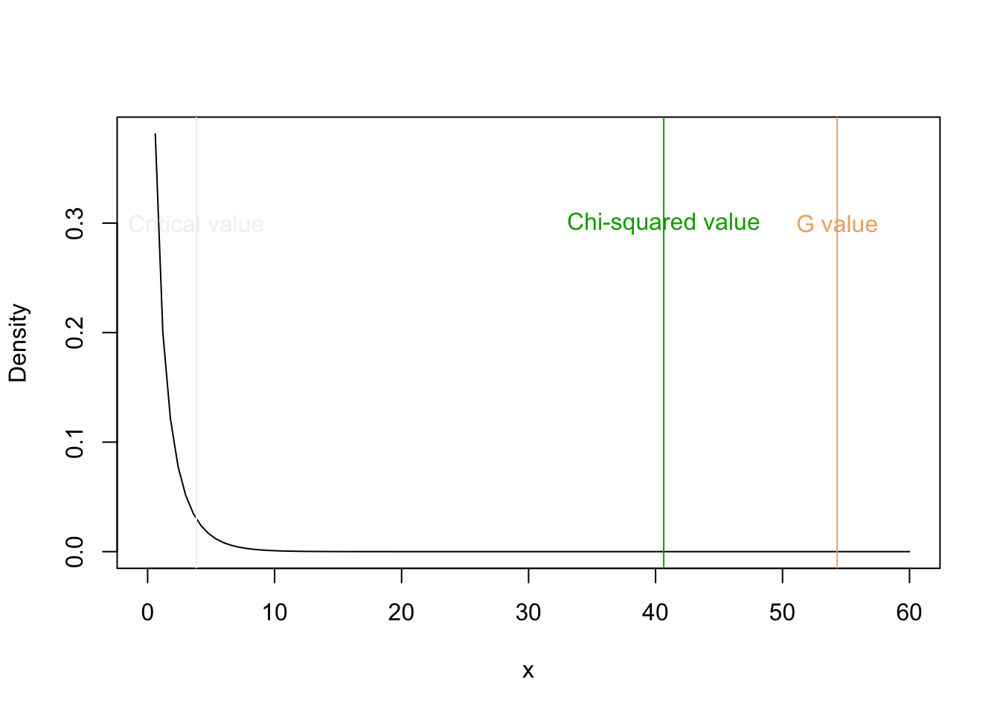
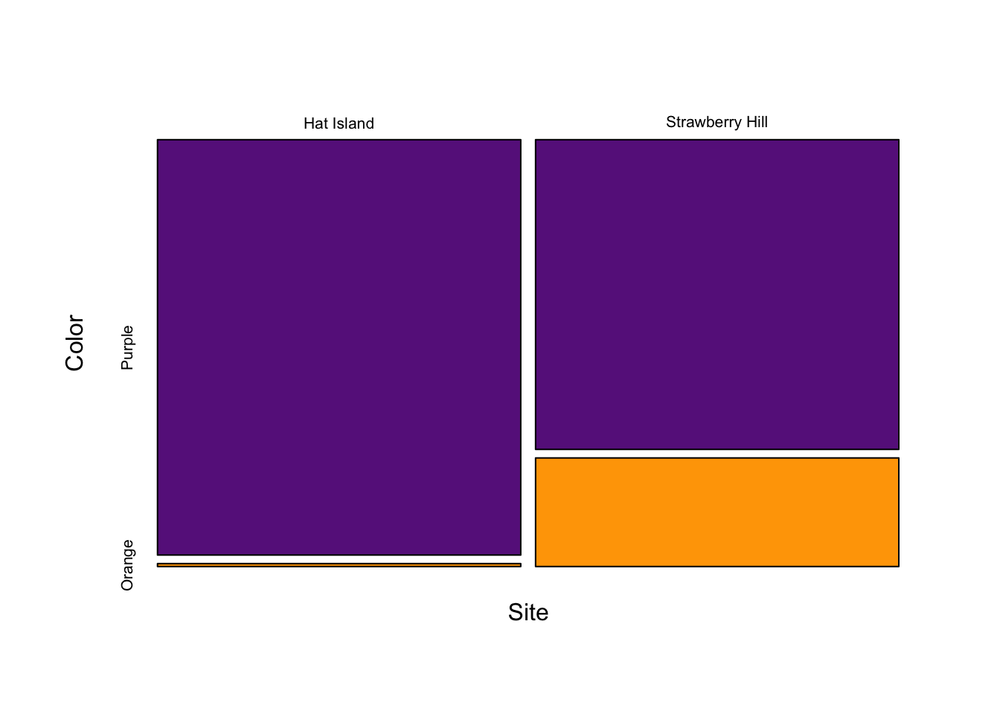
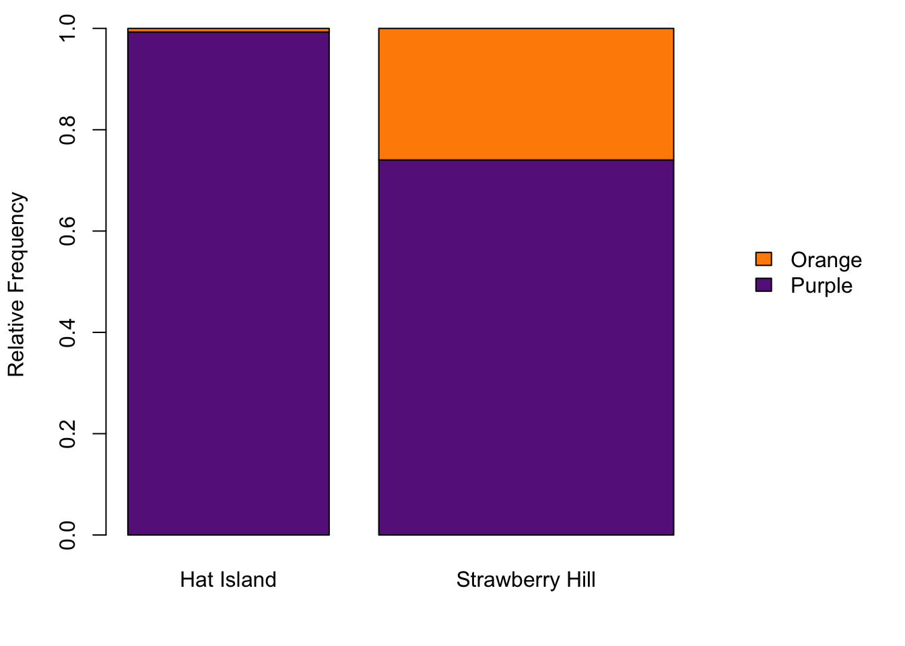
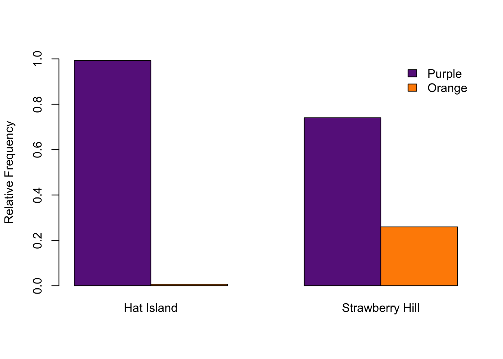

The null and alternative hypotheses are the same for the Chi-squared and G contingency tests. The null for both tests are that the two variables are independent of each other. The alternative is that the two variables are dependent.
Or stated another way.
The data are typically entered and archived similar to data for a Chi-squared goodness-of-fit test, and there are two common ways: create two columns and record each observation as a row, or create a contingency table and directly enter the frequencies of each group. Let’s do both.
Let’s assumed we are studying a plant that can induce a chemical defense when an herbivore is present. We go into the field and randomly select plants from our population of interest, and record whether the herbivore is present and take a tissue sample to determine whether the plant has induced a high level of phenolics as a defense. You can enter the data into Excel and read the data into R with the function read.csv(), or directly enter the data into R. Below I just enter the data directly into R.
herbivore <- c("Yes", "Yes", "No", "Yes", "Yes", "Yes", "No", "Yes", "No", "No", "No", "Yes")
phenolics <- c("No", "Yes", "No", "No", "Yes", "Yes", "No", "Yes", "No", "Yes", "No", "Yes")
#You can combine the data into a data.frame
(myData <- data.frame(herbivore, phenolics))## herbivore phenolics
## 1 Yes No
## 2 Yes Yes
## 3 No No
## 4 Yes No
## 5 Yes Yes
## 6 Yes Yes
## 7 No No
## 8 Yes Yes
## 9 No No
## 10 No Yes
## 11 No No
## 12 Yes YesYou can also create a csv file from data that you entered into R with the function write.csv(). The code is below but it is commented out because I don’t actually want to do this.
#write the data to a csv file
#write.csv(myData, "inducible_defense_data.csv")You can use the function table() to create a contingency table or just enter the data directly with the function matrix()
(conTable <- table(myData))## phenolics
## herbivore No Yes
## No 4 1
## Yes 2 5(conTable2 <- matrix(c(4,1,2,5), 2, byrow = T, dimnames = list(herbivores = c("No", "Yes"), phenolics = c("No", "Yes"))))## phenolics
## herbivores No Yes
## No 4 1
## Yes 2 5Let’s continue to analyze our sea star data from Harley et al (2006). They measured the frequencies of the two common color morphs at many sites, not just Strawberry Hill. In fact, they sample Hat Island, which is a small island just south of Bellingham at the mouth of Padilla Bay. At Hat Island they sampled 142 individuals and all but one were purple! So, let’s ask whether the color is indendent of site. What is your guess given the data?
#Hat Island data
HI <- c(purple = 141, orange = 1)
#Strawberry Hill data
SH <- c(purple = 154, orange = 54)
(obsFreqs <- matrix(c(HI, SH), 2,
dimnames = list(color = c("Purple", "Orange"), site = c("Hat Island", "Strawberry Hill"))))## site
## color Hat Island Strawberry Hill
## Purple 141 154
## Orange 1 54Unlike the Chi-squared goodness-of-fit test, the Chi-squared and G contingency tests require that we calculate the expected values from the observed data. Luckily there are a few functions in R that will help us.
So let’s calculate the expected values from the contingency table. An easy way to calculate the row, column, and total sums is with the function addmargins(). You can then extract the column and row totals and calculate the column and row probabilities— extract the correct values by using hard brackets and divide by the total number of observations. The function outer() will then calculate the all the shared probabilities and then just multiple this matrix by the total number of observations. For a small data set like this, by hand might be quicker. However, for a large data set, using the functions in R will save you a lot of time. Remember the expected values are easily calculated by multiplying the row total and column total of interest and then dividing by the grand total.
(obsFreqsMar <- addmargins(obsFreqs))## site
## color Hat Island Strawberry Hill Sum
## Purple 141 154 295
## Orange 1 54 55
## Sum 142 208 350#Order matters, do rows and then columns for this example
(expFreqs <- outer(obsFreqsMar[1:2,3], obsFreqsMar[3,1:2])/obsFreqsMar[3,3])## Hat Island Strawberry Hill
## Purple 119.68571 175.31429
## Orange 22.31429 32.68571#Recommend double checking your answersWe can now use the equation for the Chi-squared test statistic to to calculate the Chi-squared value.
\[ \chi^2 = \Sigma_{j=1}^{c} \Sigma_{i=1}^{r} \frac{(O_{i,j}-E_{i,j})^2}{E_{i,j}} \]
, where O are the observed values, E are the expected values, and r is the number of row, c is the number of columns.
R makes this calculation very easy because it pairs up the values in a given cell. For example, when you add two matrices, it will add the value in the upper-left in one matrix to the value in the upper-left of the other matrix.
(chiVal <- sum(((obsFreqs-expFreqs))^2/expFreqs))## [1] 40.6452Now let’s calculate the G value with the equation for the G test statistic.
\[ \chi^2 = 2 \times \Sigma_{j=1}^{c}
\Sigma_{i=1}^{r} O_{i,j} \times ln(\frac{O_{i,j}}{E_{i,j}})
\]
, where O are the observed values, E are the expected values, and r is the number of row, c is the number of columns.
(gVal <- 2*sum(obsFreqs*log(obsFreqs/expFreqs)))## [1] 54.30234#Remember log does natural log in RNotice that the value is not very similar to the Chi-squared value you calculated above. This is because the two test statistics deviate when the observed and expected are very different. However, when this happens then both test statistics result in P-values that are very small, so the conclusions are the same (reject the null hypothesis).
We looked at the Chi-squared distribution in the Chi-squared goodness-of-fit test webpage. It is exactly the same distribution for both the Chi-squared and G contingency tests. To calculate the degrees of freedom for both test, multiple the number of rows - 1 by the number of columns - 1.
\[v = (r - 1) \times (c - 1)\]
So, for our example, we have 2 rows and 2 columns, and thus the degrees of freedom are 1. We can now calculate the P-values for both of our test statistics (the Chi-squared value and the G value).
(pChi <- 1 - pchisq(chiVal, 1))## [1] 1.825347e-10(pG <- 1 - pchisq(gVal, 1))## [1] 1.718625e-13curve(dchisq(x, 1), 0, 60, ylab = "Density")
abline(v = c(chiVal, gVal, qchisq(0.95, 1)), col = terrain.colors(3))
text(c(chiVal, gVal, qchisq(0.95, 1)), 0.3, c("Chi-squared value", "G value", "Critical value"), col = terrain.colors(3))
Just like for the Chi-squared goodness-of-fit test, we can use the function chisq.test() to perform the Chi-squared contigency test. We want to change the argument correct to false, unless of course we have an issue with small sample sizes, and we don’t need to change the argument p because the function will calculate the expected values for us.
chisq.test(obsFreqs, correct = F)##
## Pearson's Chi-squared test
##
## data: obsFreqs
## X-squared = 40.645, df = 1, p-value = 1.825e-10There is no function for the G test in the stats package. However, Pete Hurd was kind enough to write a function to do the test. See the bottom of the page for the function g.test(). You can copy the code, run it, and then the function is available for you to use. The function g.test() has the same arguments as the function chisq.test(). However, the possible values for the argument are different than for the function chisq.test(). We want to set the argument correct to “none”.
g.test(obsFreqs, correct = "none")##
## Log likelihood ratio (G-test) test of independence without correction
##
## data: obsFreqs
## Log likelihood ratio statistic (G) = 54.302, X-squared df = 1, p-value
## = 1.719e-13We discussed in the lecture what information to include in a manuscript.
Barplots and mosaic plots are typically used for displaying the contingency data. We will make both using the functions mosaicplot() and barplot(). There are other packages that can also easily create mosiac and bar plots. First let’s create the mosaic plot. You need to be careful to make sure the values correspond to the correct groups when making your matrix with the code below.
mosaicData <- obsFreqs/matrix(c(142, 208, 142, 208), 2, byrow = T)
#Rev the matrix so site is on the x axis
mosaicData2 <- t(mosaicData)
mosaicplot(mosaicData2,
main = "",
col = c("darkorchid4", "orange"),
ylab = "Color",
xlab = "Site")
You can also easily create a mosaic plot by modifying the function barplot(). First we are going to create larger margin the on right side of the graph using the argument mar in the function par(). We call the function barplot() with the relative frequencies for each site. We calculate the relative frequencies by dividing each value in the matrix of our observed frequencies by the column total. We then set the width of each bar with the argument width. We can pass arguments to the legend function with the argument args.legend, but this argument requires a list of the arguments you want to set in the function legend() (I know it sounds a bit crazy, but just carefully look at the code below).
opar <- par()
par(mar = c(4, 4, 1, 8) + 0.1)
barplot(obsFreqs/matrix(c(142, 208, 142, 208), 2, byrow = T),
legend = T,
width = c(142, 208),
ylab = "Relative Frequency",
col = c("darkorchid4", "darkorange"),
args.legend = list(x = "topright", bty = "n", inset = c(-0.3, 0.4)))
#par(opar)With very similar code, you can create a paired barplot. Some people prefer paired barplots to mosaic plots.
barplot(obsFreqs/matrix(c(142, 208, 142, 208), 2, byrow = T),
beside = T,
legend = T,
ylim = c(0, 1),
ylab = "Relative Frequency",
col = c("darkorchid4", "darkorange"),
args.legend = list(x = "topright", bty = "n"))
That is it. You now should be able to analyze contigency data with a chi-squared or G tests.
# Log-likelihood tests of independence & goodness of fit
# Does Williams' and Yates' correction
# does Monte Carlo simulation of p-values, via gtestsim.c
#
# G & q calculation from Sokal & Rohlf (1995) Biometry 3rd ed.
# TOI Yates' correction taken from Mike Camann's 2x2 G-test fn.
# GOF Yates' correction as described in Zar (2000)
# more stuff taken from ctest's chisq.test()
#
# V3.3 Pete Hurd Sept 29 2001. phurd@ualberta.ca
g.test <- function(x, y = NULL, correct="williams",
p = rep(1/length(x), length(x)), simulate.p.value = FALSE, B = 2000)
#can also use correct="none" or correct="yates"
{
DNAME <- deparse(substitute(x))
if (is.data.frame(x)) x <- as.matrix(x)
if (is.matrix(x)) {
if (min(dim(x)) == 1)
x <- as.vector(x)
}
if (!is.matrix(x) && !is.null(y)) {
if (length(x) != length(y))
stop("x and y must have the same length")
DNAME <- paste(DNAME, "and", deparse(substitute(y)))
OK <- complete.cases(x, y)
x <- as.factor(x[OK])
y <- as.factor(y[OK])
if ((nlevels(x) < 2) || (nlevels(y) < 2))
stop("x and y must have at least 2 levels")
x <- table(x, y)
}
if (any(x < 0) || any(is.na(x)))
stop("all entries of x must be nonnegative and finite")
if ((n <- sum(x)) == 0)
stop("at least one entry of x must be positive")
#If x is matrix, do test of independence
if (is.matrix(x)) {
#Test of Independence
nrows<-nrow(x)
ncols<-ncol(x)
if (correct=="yates"){ # Do Yates' correction?
if(dim(x)[1]!=2 || dim(x)[2]!=2) # check for 2x2 matrix
stop("Yates' correction requires a 2 x 2 matrix")
if((x[1,1]*x[2,2])-(x[1,2]*x[2,1]) > 0)
{
x[1,1] <- x[1,1] - 0.5
x[2,2] <- x[2,2] - 0.5
x[1,2] <- x[1,2] + 0.5
x[2,1] <- x[2,1] + 0.5
}
else
{
x[1,1] <- x[1,1] + 0.5
x[2,2] <- x[2,2] + 0.5
x[1,2] <- x[1,2] - 0.5
x[2,1] <- x[2,1] - 0.5
}
}
sr <- apply(x,1,sum)
sc <- apply(x,2,sum)
E <- outer(sr,sc, "*")/n
# are we doing a monte-carlo?
# no monte carlo GOF?
if (simulate.p.value){
METHOD <- paste("Log likelihood ratio (G-test) test of independence\n\t with simulated p-value based on", B, "replicates")
tmp <- .C("gtestsim", as.integer(nrows), as.integer(ncols),
as.integer(sr), as.integer(sc), as.integer(n), as.integer(B),
as.double(E), integer(nrows * ncols), double(n+1),
integer(ncols), results=double(B), PACKAGE= "ctest")
g <- 0
for (i in 1:nrows){
for (j in 1:ncols){
if (x[i,j] != 0) g <- g + x[i,j] * log(x[i,j]/E[i,j])
}
}
STATISTIC <- G <- 2 * g
PARAMETER <- NA
PVAL <- sum(tmp$results >= STATISTIC)/B
}
else {
# no monte-carlo
# calculate G
g <- 0
for (i in 1:nrows){
for (j in 1:ncols){
if (x[i,j] != 0) g <- g + x[i,j] * log(x[i,j]/E[i,j])
}
}
q <- 1
if (correct=="williams"){ # Do Williams' correction
row.tot <- col.tot <- 0
for (i in 1:nrows){ row.tot <- row.tot + 1/(sum(x[i,])) }
for (j in 1:ncols){ col.tot <- col.tot + 1/(sum(x[,j])) }
q <- 1+ ((n*row.tot-1)*(n*col.tot-1))/(6*n*(ncols-1)*(nrows-1))
}
STATISTIC <- G <- 2 * g / q
PARAMETER <- (nrow(x)-1)*(ncol(x)-1)
PVAL <- 1-pchisq(STATISTIC,df=PARAMETER)
if(correct=="none")
METHOD <- "Log likelihood ratio (G-test) test of independence without correction"
if(correct=="williams")
METHOD <- "Log likelihood ratio (G-test) test of independence with Williams' correction"
if(correct=="yates")
METHOD <- "Log likelihood ratio (G-test) test of independence with Yates' correction"
}
}
else {
# x is not a matrix, so we do Goodness of Fit
METHOD <- "Log likelihood ratio (G-test) goodness of fit test"
if (length(x) == 1)
stop("x must at least have 2 elements")
if (length(x) != length(p))
stop("x and p must have the same number of elements")
E <- n * p
if (correct=="yates"){ # Do Yates' correction
if(length(x)!=2)
stop("Yates' correction requires 2 data values")
if ( (x[1]-E[1]) > 0.25) {
x[1] <- x[1]-0.5
x[2] <- x[2]+0.5
}
else if ( (E[1]-x[1]) > 0.25){
x[1] <- x[1]+0.5
x[2] <- x[2]-0.5
}
}
names(E) <- names(x)
g <- 0
for (i in 1:length(x)){
if (x[i] != 0) g <- g + x[i] * log(x[i]/E[i])
}
q <- 1
if (correct=="williams"){ # Do Williams' correction
q <- 1+(length(x)+1)/(6*n)
}
STATISTIC <- G <- 2*g/q
PARAMETER <- length(x) - 1
PVAL <- pchisq(STATISTIC, PARAMETER, lower = FALSE)
}
names(STATISTIC) <- "Log likelihood ratio statistic (G)"
names(PARAMETER) <- "X-squared df"
names(PVAL) <- "p.value"
structure(list(statistic=STATISTIC,parameter=PARAMETER,p.value=PVAL,
method=METHOD,data.name=DNAME, observed=x, expected=E),
class="htest")
}